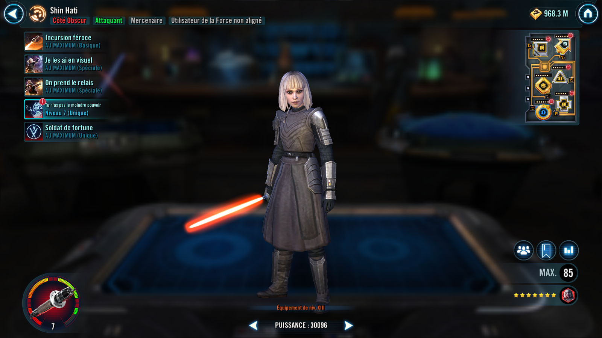

Shin Hati
An exceptional lightsaber combatant who ignores Taunt to ruin her foes.
An exceptional lightsaber combatant who ignores Taunt to ruin her foes.

Deal Physical damage to target enemy and inflict Critical Chance Down for 1 turn. If Shin Hati has 10 or more stacks of Soldier of Fortune, she inflicts Critical Chance Down on all enemies for 1 turn instead. During Shin Hati's turn, call target other Mercenary ally to assist.
If the target enemy was Stunned, deal 10% more damage per stack of Soldier of Fortune on Shin Hati (max 100%).
Deal Physical damage to all enemies and inflict them with Offense Down and Vulnerable for 2 turns. Shin Hati gains 10% Crit Avoidance (stacking, max 50%) for rest of the encounter whenever each of these debuffs are resisted. All Mercenary allies gain 30% Protection Up for 2 turns. If Shin Hati has 10 or more stacks of Soldier of Fortune, gain 25% Turn Meter and increase the cooldowns of all enemies by 1.
Deal Physical damage to target enemy and Stun them for 1 turn. Shin Hati gains Critical Damage Up and Riposte for 2 turns. If Shin Hati has 15 or more stacks of Soldier of Fortune, attack again, always scoring a critical hit if able and decrease the cooldown of Clean Escape by 1.
If target enemy is inflicted with Purge, Shin Hati inflicts Buff Immunity on them for 2 turns and deals 10% bonus damage for each stack of Purge they have (stacking, max 60%).
At the start of each encounter, Shin Hati gains 25% Accuracy and 50% Offense until the end of the encounter, and she ignores Taunt effects during her turn. Whenever Shin Hati is critically hit, she gains Retribution for 2 turns and 150 Speed for 1 turn. The first time Shin Hati gains 10 or more stacks of Soldier of Fortune, she gains the granted ability Clean Escape for the rest of the battle. If Shin Hati has less than 10 stacks of Soldier of Fortune, Clean Escape can't be used.
Clean Escape: Effects are based on the number of Shin Hati's stacks of Soldier of Fortune:
- 10+ stacks: She dispels all her debuffs and gains 30% Max Health until the end of the encounter. All non-Tank allies Stealth for 2 turns.
- 20+ stacks: She dispels buffs on the target enemy. Shin Hati gains Critical Hit Immunity and Health Steal Up for 2 turns and inflicts Defense Down on all enemies for 2 turns.
- 35+ stacks: All Mercenary allies gain Foresight and Offense Up for 2 turns. Shin Hati removes 100% Turn Meter, and Dazes all enemies for 2 turns, which can't be resisted.
omicron Boost : While in Territory Wars and all allies are Mercenary or non-Galactic Legend Unaligned Force User: At the start of each encounter, Shin Hati gains 75% Accuracy and 30 Speed, all allies gain 50% Max Health and Max Protection until the first time Shin Hati is defeated, and all Light side enemies are immune to cooldown reduction for 2 turns or until the first time Shin Hati is defeated.
While enemies are inflicted with Purge they have -50% Critical Damage and -30 Speed.
Whenever enemies attack 3 times out of turn, Shin Hati gains 1 stack of Soldier of Fortune.
Whenever Shin Hati gains Riposte and has 15 or more stacks of Soldier of Fortune, the cooldown of Clean Escape is decreased by 3.
Whenever a Light side enemy gains Damage Immunity, they are inflicted with Fear for 1 turn, which can't be resisted and Shin Hati gains a bonus turn.
Clean Escape has additional effects based on the number of Soldier of Fortune stacks on Shin Hati:
- 20+ stacks: All Mercenary allies are revived.
- 35+ stacks: Target Light Side enemy's cooldowns are increased to their max value.
Clean Escape: Effects are based on the number of Shin Hati's stacks of Soldier of Fortune:
- 10+ stacks: She dispels all her debuffs and gains 30% Max Health until the end of the encounter. All non-Tank allies Stealth for 2 turns
- 20+ stacks: She dispels buffs on the target enemy. Shin Hati gains Critical Hit Immunity and Health Steal Up for 2 turns and inflicts Defense Down on all enemies for 2 turns.
- 35+ stacks: All Mercenary allies gain Foresight and Offense Up for 2 turns. Shin Hati removes 100% Turn Meter, and Dazes all enemies for 2 turns, which can't be resisted.
Whenever Shin Hati scores a critical hit or attacks out of turn, she gains 1 stack of Soldier of Fortune.
Whenever Shin Hati is critically hit, she loses 1 stack of Soldier of Fortune.
At the start of battle, Shin Hati gains 1 stack of Soldier of Fortune per Relic Amplifier level she has until the end of battle.
At the start of each Mercenary ally's turn, they gain 5% Critical Chance and Critical Damage (stacking) for each stack of Soldier of Fortune they have until the start of their next turn.